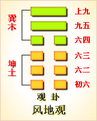

周易第二十卦 观 风地观 巽上坤下
观：盥而不荐，有孚□若。
彖曰：大观在上，顺而巽，中正以观天下。观，盥而不荐，有孚颙若，下观而化也。观天之神道，而四时不忒，圣人以神道设教，而天下服矣。
象曰：风行地上，观;先王以省方，观民设教。
初六：童观，小人无咎，君子吝。象 曰：初六童观，小人道也。
六二：窥观，利女贞。象曰：窥观女贞，亦可丑也。
六三：观我生，进退。象曰：观我生，进退;未失道也。
六四：观国之光，利用宾于王。象曰：观国之光，尚宾也。
九五：观我生，君子无咎。象曰：观我生，观民也。
上九：观其生，君子无咎。象曰：观其生，志未平也。
观卦卦象，风地观卦的象征意义
风地观卦，这个卦是异卦相叠，下卦为坤，上卦为巽。风行地上，喻德教遍施。 巽为风在上，坤为地在下。说明巽在上，为民办事，像风一样迅速，无处不到。地在下，表示地上的万物仰首观察巽的行为，产生敬重和羡慕的心理，决心学习巽的德才。由此可知，观卦本身是以敬重的态度观察和学习他人优点和长处的卦。
所以说，观者，是指观察和学习而言。观卦，指领导者要为人表率，高山仰止。《象》中这样解释观卦：风行地上，观。先王以省方观民设教。《象》中指出：风吹行在大地上，这就是观卦。古代帝王由此领悟，要巡视四方，观察民情，并设立教化。
观卦启示了观下瞻上的道理，在上者以道义观天下;在下者以敬仰瞻上，人心顺服归从。观卦属于中上卦。《象》这样评断此卦：卦遇蓬花旱逢河，生意买卖利息多，婚姻自有人来助，出门永不受折磨。
风地观卦卦名为观。《说文》中说：“观，谛视也。”“谛视”就是仔细、详细地察看、审察的意思。前面的临卦也有察看的意思，而这一观卦也有察看的意思。它们之间有什么不同呢?《杂卦传》中作出了解释：“临观之义，或与或求。”也就是说两个卦都是看的意思，但临卦的出发点是给予，而观卦的出发点是求取。也就是说，临卦的巡视是为了掌握老百姓的真实情况，最终目的是给予老百姓更优惠的政策，给老百姓带来好处;观卦则是仔细观察大自然的变化，观察天地运转及神灵的相关信息，最终目的是为了掌握这种变化规律与哲理。简单来说临是发现问题解决问题，观是探索未知而掌握知识。《序卦传》中说：“物大然后可观，故受之以观。”这种解释是从卦气上来说的，但解释有些片面，前面我们讲了，《十翼》部分并非一个人、一个时期的产生，所以里面有正确的，也有不正确的，不能把它当成解经的唯一途径。临卦从卦气学说来讲，是指阳气逐渐增强，所以有盛大的意思。可如果按卦气的十二消息卦进行排列，下面应该是三阳开泰的泰卦，怎么能是观卦呢?所以《序卦传》的说法是片面的。观卦排在临卦之后，主要是它与临卦的含义相反的缘故。临卦代表阳气渐长，观卦代表阴气渐长;临卦表示的是发现问题解决问题，观卦则是探索未知掌握知识卦画上也是排列顺序正好相反。所以将观卦排列在临卦之后。“非覆既变”是《周易》排列八卦的特点，其内涵便是让人明白事物都是一分为二的，都有正反两个方面，好让人懂得从双方面思考问题，对利弊都要考虑。这按现在的话来说就叫换位思考。
风地观卦的卦画是下面四个阴爻，上面两个阳爻，与临卦的卦画排列顺序正好相反。
风地观卦从卦象上进行分析，观卦上卦为巽为风，下卦为坤为地，风吹拂着大地就是观卦的卦象。风无处不在，无孔不入，人也应当像风一样，无所不观，观察万物而得到更多的知识。
关键词：周易,观卦,风地观,巽上坤下
观卦：祭祀时灌酒敬神，不献人牲，因为作祭牲的俘虏头青脸肿，不宜敬神。
初六：看问题幼稚无知，这对小人来说没有什么，但对君子就有害了。
六二：目光短浅，这是对女子有利的兆头。
六三：体察亲族的动向，由此决定政策措施。
六四：观察国家政绩大小，以选择可以朝觐的君王。
九五：体察亲族的意向，君子从政就不会有困难。
上九：体察其他部族的意向，君子从政就不会有困难。
①观是本卦标题。观的意思是观察、观看。全卦的内容与政治统治有关. 观在卦中多次出现，也与所讲内容有关，所以用它来作标题。
(2)盥(guan)： 古代祭祖时用酒灌地迎神。荐：献，指祭祖时的献牲。
③颙(yong)若 ：头大的样子，这里是指俘虏的头被打肿了。
(4)童：儿童，这里指幼稚无知。
(5)闚观:一孔之见。
(6)我生：我姓，指亲族。进退：行动，这里指政策措施。
(7)光：光耀，这里指政绩光耀。宾：作宾客，这里指朝觐。
(8)其生：其他姓氏，指别的部落氏族。